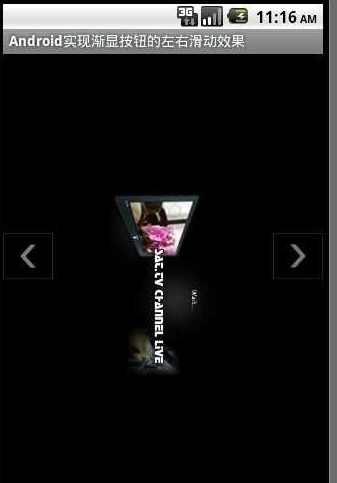
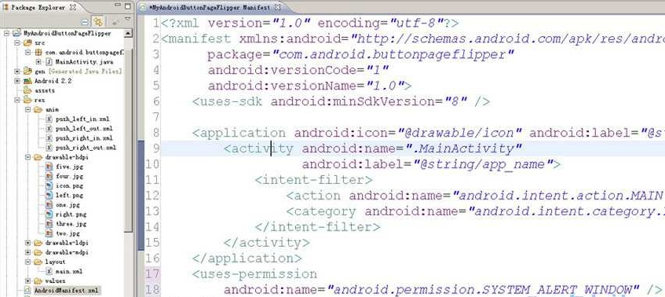

Android实现渐显按钮的左右滑动效果
本示例演示在Android中实现带渐显按钮的左右滑动效果。先看下运行效果：

程序结构：

MainActivity文件中代码：
import android.app.Activity;import android.graphics.PixelFormat;
import android.os.Bundle;
import android.os.Handler;
import android.os.Message;
import android.view.Gravity;
import android.view.MotionEvent;
import android.view.View;
import android.view.WindowManager;
import android.view.WindowManager.LayoutParams;
import android.widget.ImageView;
import android.widget.ViewFlipper;
/**
* Android实现带渐显按钮的左右滑动效果 自然状态下按钮不可见,触摸屏幕时显示按钮
*/
public class MainActivity extends Activity {
// 声明两个按钮,分别代表向左和向右滑动
private ImageView btnLeft = null;
private ImageView btnRight = null;
// 设置WindowManager
private WindowManager wm = null;
private WindowManager.LayoutParams wmParams = null;
// ImageView的alpha值
private int mAlpha = 0;
private boolean isHide;
private ViewFlipper viewFlipper = null;
@Override
public void onCreate(Bundle savedInstanceState) {
super.onCreate(savedInstanceState);
setContentView(R.layout.main);
setTitle("Android实现渐显按钮的左右滑动效果");
viewFlipper = (ViewFlipper) this.findViewById(R.id.myViewFlipper);
// 初始化左右按钮
initImageButtonView();
}
/**
* 初始化悬浮按钮
*/
private void initImageButtonView() {
// 获取WindowManager
wm = (WindowManager) getApplicationContext().getSystemService("window");
// 设置LayoutParams相关参数
wmParams = new WindowManager.LayoutParams();
// 设置window type
wmParams.type = LayoutParams.TYPE_PHONE;
// 设置图片格式,效果为背景透明
wmParams.format = PixelFormat.RGBA_8888;
// 设置Window flag参数
wmParams.flags = LayoutParams.FLAG_NOT_TOUCH_MODAL
| LayoutParams.FLAG_NOT_FOCUSABLE;
// 设置x、y初始值
wmParams.x = 0;
wmParams.y = 0;
// 设置窗口长宽数据
wmParams.width = 50;
wmParams.height = 50;
// 创建左右按钮
createLeftButtonView();
createRightButtonView();
}
/**
* 设置左边按钮
*/
private void createLeftButtonView() {
btnLeft = new ImageView(this);
btnLeft.setImageResource(R.drawable.left);
btnLeft.setAlpha(0);
btnLeft.setOnClickListener(new View.OnClickListener() {
public void onClick(View arg0) {
// 上一个图像
viewFlipper.setInAnimation(MainActivity.this,
R.anim.push_left_in);
viewFlipper.setOutAnimation(MainActivity.this,
R.anim.push_left_out);
viewFlipper.showPrevious();
}
});
// 调整窗口
wmParams.gravity = Gravity.LEFT | Gravity.CENTER_VERTICAL;
// 显示图像
wm.addView(btnLeft, wmParams);
}
/**
* 设置右边按钮
*/
private void createRightButtonView() {
btnRight = new ImageView(this);
btnRight.setImageResource(R.drawable.right);
btnRight.setAlpha(0);
btnRight.setOnClickListener(new View.OnClickListener() {
public void onClick(View arg0) {
// 下一个图像
viewFlipper.setInAnimation(MainActivity.this,
R.anim.push_right_in);
viewFlipper.setOutAnimation(MainActivity.this,
R.anim.push_right_out);
viewFlipper.showNext();
}
});
// 调整窗口
wmParams.gravity = Gravity.RIGHT | Gravity.CENTER_VERTICAL;
// 显示图像
wm.addView(btnRight, wmParams);
}
/**
* 设置按钮渐显效果
*/
private Handler mHandler = new Handler() {
public void handleMessage(Message msg) {
if (msg.what == 1 && mAlpha < 255) {
// 通过设置不透明度设置按钮的渐显效果
mAlpha += 50;
if (mAlpha > 255)
mAlpha = 255;
btnLeft.setAlpha(mAlpha);
btnLeft.invalidate();
btnRight.setAlpha(mAlpha);
btnRight.invalidate();
if (!isHide && mAlpha < 255)
mHandler.sendEmptyMessageDelayed(1, 100);
} else if (msg.what == 0 && mAlpha > 0) {
mAlpha -= 10;
if (mAlpha < 0)
mAlpha = 0;
btnLeft.setAlpha(mAlpha);
btnLeft.invalidate();
btnRight.setAlpha(mAlpha);
btnRight.invalidate();
if (isHide && mAlpha > 0)
mHandler.sendEmptyMessageDelayed(0, 800);
}
}
};
private void showImageButtonView() {
isHide = false;
mHandler.sendEmptyMessage(1);
}
private void hideImageButtonView() {
new Thread() {
public void run() {
try {
Thread.sleep(1500);
isHide = true;
mHandler.sendEmptyMessage(0);
} catch (Exception e) {
;
}
}
}.start();
}
@Override
public boolean onTouchEvent(MotionEvent event) {
switch (event.getAction()) {
case MotionEvent.ACTION_MOVE:
case MotionEvent.ACTION_DOWN:
showImageButtonView();
break;
case MotionEvent.ACTION_UP:
hideImageButtonView();
break;
}
return true;
}
@Override
public void onDestroy() {
super.onDestroy();
// 在程序退出(Activity销毁)时销毁窗口
wm.removeView(btnLeft);
wm.removeView(btnRight);
}
}
main.xml文件中代码：
<?xml version="1.0" encoding="utf-8"?><LinearLayout xmlns：android="http：//schemas.android.com/apk/res/android"
android：layout_width="fill_parent"
android：layout_height="fill_parent"
android：orientation="vertical">
push_left_in.xml文件中代码：
<?xml version="1.0" encoding="utf-8"?><set xmlns:android="http://schemas.android.com/apk/res/android" >
<translate
android:duration="500
android:fromXDelta="100%p
android:toXDelta="0" />
<alpha
android:duration="500
android:fromAlpha="0.1
android:toAlpha="1.0" />
</set>
push_left_out.xml文件中代码：
<?xml version="1.0" encoding="utf-8"?><set xmlns:android="http://schemas.android.com/apk/res/android" >
<translate
android:duration="500
android:fromXDelta="0
android:toXDelta="-100%p" />
<alpha
android:duration="500
android:fromAlpha="1.0
android:toAlpha="0.1" />
</set>
push_right_in.xml文件中代码：
<?xml version="1.0" encoding="utf-8"?><set xmlns:android="http://schemas.android.com/apk/res/android" >
<translate
android:duration="500
android:fromXDelta="-100%p
android:toXDelta="0" />
<alpha
android:duration="500
android:fromAlpha="0.1
android:toAlpha="1.0" />
</set>
push_right_out.xml文件中代码：
<?xml version="1.0" encoding="utf-8"?><set xmlns:android="http://schemas.android.com/apk/res/android" >
<translate
android:duration="500
android:fromXDelta="0
android:toXDelta="100%p" />
<alpha
android:duration="500
android:fromAlpha="1.0
android:toAlpha="0.1" />
</set>
最后，别忘记了在配置文件中设置权限。